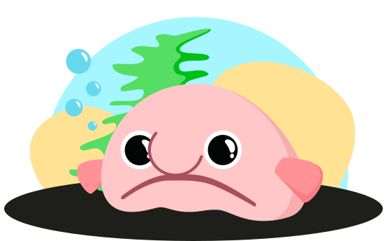

Benthos
The stream processor for mundane tasks

It's boringly easy to use
Written in Go, deployed as a static binary, declarative configuration. Cloud native as utter heck.
- Curl
- Homebrew
- Docker
# Installcurl -Lsf https://sh.benthos.dev | bash# Make a configbenthos create nats/protobuf/sqs > ./config.yaml# Runbenthos -c ./config.yaml
- Mapping
- Multiplexing
- Enrichments
Read moreinput:gcp_pubsub:project: foosubscription: barpipeline:processors:- bloblang: |root.message = thisroot.meta.link_count = this.links.length()root.user.age = this.user.age.number()output:redis_streams:url: tcp://TODO:6379stream: bazmax_in_flight: 20

Takes Care of the Dull Stuff
Most stream processing tasks are actually just boring transformations, glueing APIs together, and multiplexing. Benthos specializes in these tasks, letting you focus on the more exciting features of your architecture.
It comes armed with a wide range of processors, a lit mapping language, stateless windowed processing capabilities and an industry leading mascot.

Well Connected
Benthos is able to glue a wide range of sources and sinks together and hook into a variety of databases, caches, HTTP APIs, lambdas and more, enabling you to seamlessly deploy it without changing your existing infrastructure.
Working with disparate APIs and services can be a daunting task, doubly so in a streaming data context. With Benthos it's possible to break these tasks down and automatically parallelize them as a streaming workflow.

Reliable and Scalable
Benthos runs fast and processes messages using a transaction model, making it able to guarantee at-least-once delivery even in the event of crashes or unexpected server faults.
It's completely stateless, allowing for easy deployment and liberal scaling. It also exposes metrics and tracing events to targets of your choice.
At Meltwater it's enriching over 450 million documents per day with a network of more than 20 NLP services. It sounds very interesting but rest assured, it's totally drab.

Extendable
Sometimes the components that come with Benthos aren't enough. Luckily, Benthos has been designed to be easily plugged with whatever components you need.
You can either write plugins directly in Go (recommended) or you can configure Benthos to run your plugin as a subprocess.